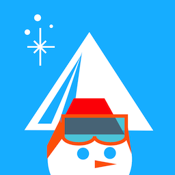
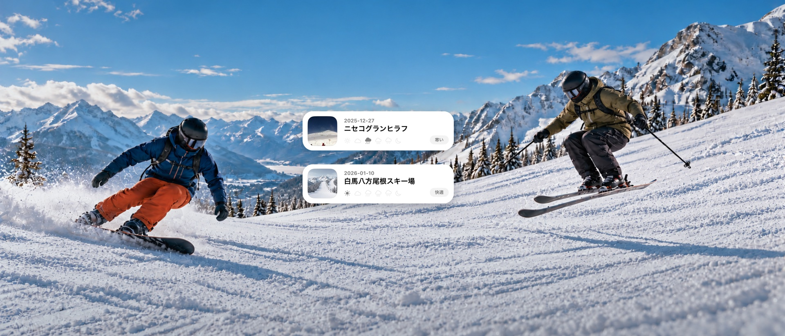
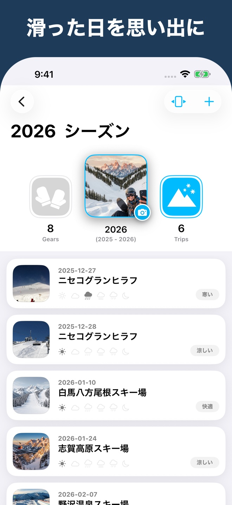
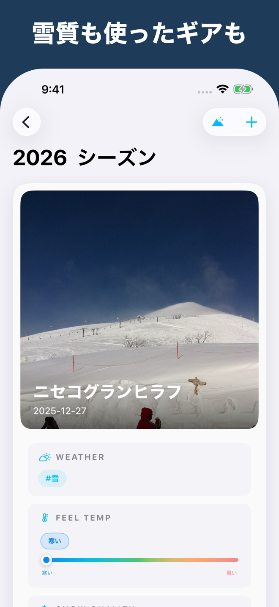
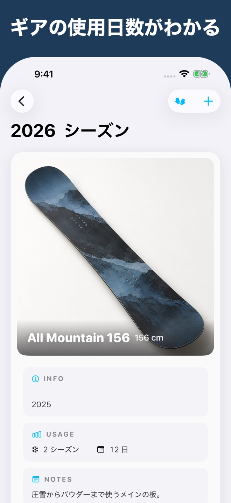
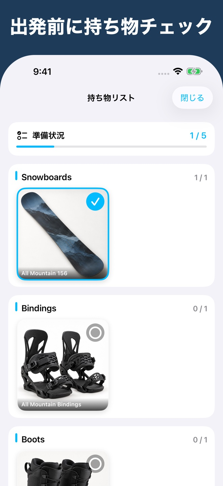
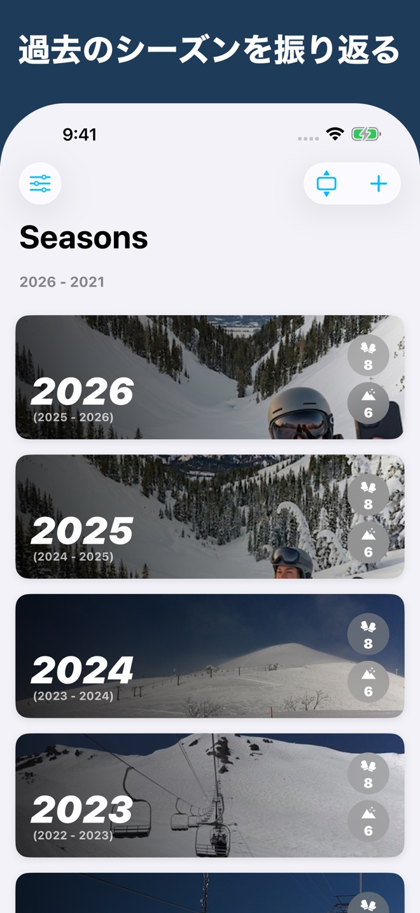

一日の滑走を記録Record a day on the snow
日付、スキー場、天候、雪質、体感温度、使ったギアを、写真やメモと一緒に記録できます。Save the date, resort, weather, snow conditions, how warm or cold it felt, and your gear, along with photos and notes.

SnowTracks
滑走日記・ギア管理Snow diary & gear
ゲレンデ、天候、ギア、写真をまとめて記録。シーズンを越えて、自分の滑走日記を振り返れます。Record slopes, weather, gear, and photos. Look back on your days on the snow, season after season.

日付、スキー場、天候、雪質、体感温度、使ったギアを、写真やメモと一緒に記録できます。Save the date, resort, weather, snow conditions, how warm or cold it felt, and your gear, along with photos and notes.
板やブーツ、ウェアを写真と一緒に登録。使用したシーズン数と日数を振り返れます。Save photos of your gear and see how many seasons and days you have used each item.
登録したギアを持ち物リストで確認。準備したものにチェックして、ゲレンデへ。Use a checklist of your registered gear. Check off what you have packed before heading to the resort.
一日の記録から、ギアの準備、シーズンの振り返りまで。From recording a day to packing your gear and revisiting past seasons.





画面はサンプルデータを使用しています。Screens show sample data.